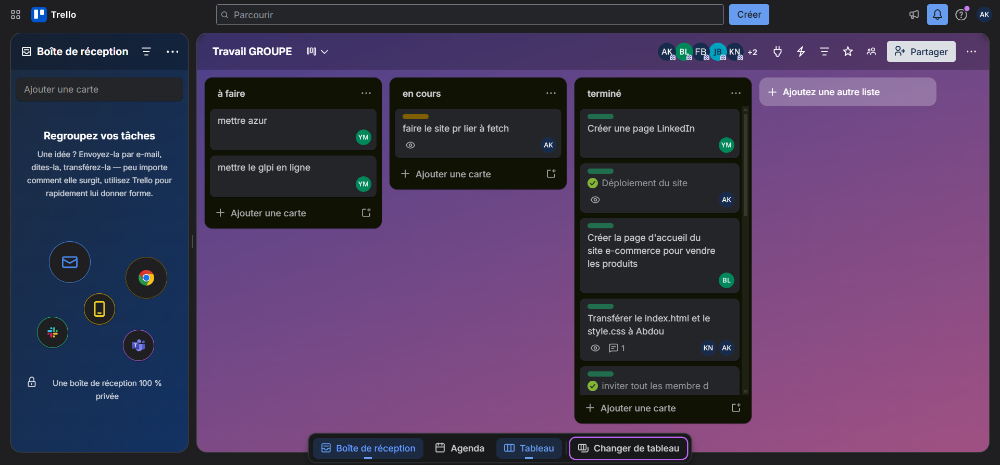
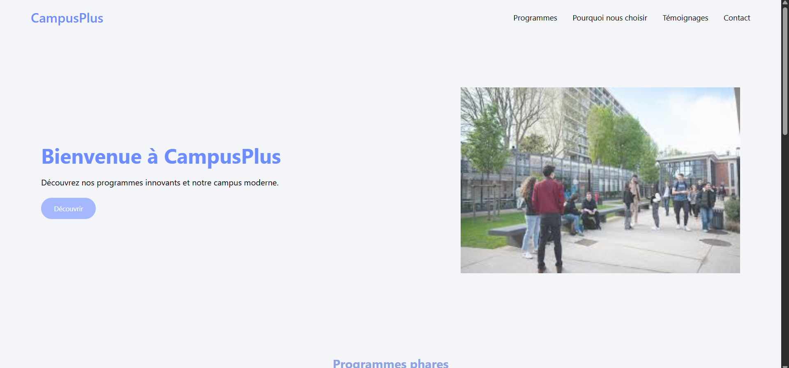

06
Annexes – Captures d'écran des projets

C1 – Active Directory : Organisation des unités organisationnelles

C7 – Gestion des tâches sur Trello pendant le Hackathon

C11 – Tableau de bord Google Analytics 4 (visiteurs, sessions)

C17 – Site dynamique PHP/MySQL déployé et accessible.
🔗 Voir le site

Hackathon – Travail en équipe et gestion des tâches via Trello.
🔗 Voir le site
07
Contact
Je suis à la recherche d'un stage ou d'une alternance en administration systèmes et réseaux. N'hésitez pas à me contacter pour échanger !
$whoami
abdou_keita
$cat formation.txt
BTS SIO SISR · EFREI Paris · 1ère année
$skills --list
Réseaux, Linux, Windows Server, Bash, PowerShell, Wireshark, VPN
$status
✓ Disponible — stage / alternance
$